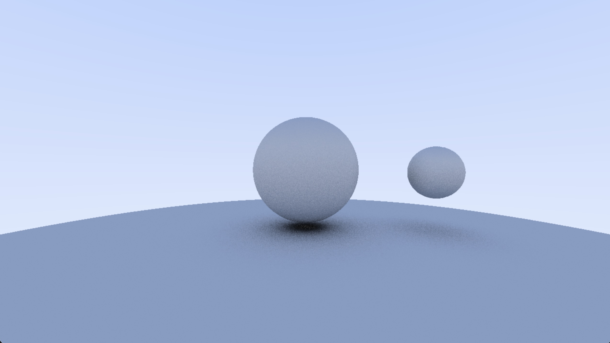

C Ray Tracer Development Blog
Overview
I took on this project after taking CS4620 (Intro to Graphics) in the Fall of 2025. We went over ray tracing in that course, however we did all of our ray tracing assingments in Python, something I was not a fan of. Being a person who is fond of optimization, I naturally decided to write my own ray tracer in C. Additionally, at the time of writing this I am enrolled in ECE5760 (Hardware Acceleration via FPGA), a topic that translates well to low-level optimization - especially for Ray Tracing. In its current state, the project is designed to compile and run on Windows, but I am designing the infrastructure in a way that should lend itself to FPGA acceleration. The target FPGA is the Xilinx UltraScale+ XCKU5P - a very capable FPGA on a unnamed bare-bones development board that I found on AliExpress. I've been exploring the Vivado toolset and designing a PCB to facilitate HDMI and USB connectivity on the FPGA.
I am hoping that this project will be the first of many in which I explore low-level graphics, and hardware acceleration. Naturally, next in line will be rasterization. I will certainly be developing a similarly natured FPGA project before my graduation in May as a final project for ECE5760, but the topic is still TBD. I'll be sure to document my progress here!
Design Challenges
SDL3 Library
The first step in this project was creating a window to draw pixels to the screen. This is something that I had never done before in C, so it was rather intimidating. I began development on a Windows system, so I started with the Win32 API. This was painful, but I figured it out. Shortly after this, I realized that it made more sense to use a cross-platform library so that I could develop on a variety of devices. SDL3 appeared to be the best choice for a cross-platform window API. Using the SDL3 documentation, and referencing several example SDL3 projects, I wrote a simple front end that reads a pixel buffer and serves it to SDL. I did this in anticipation of swapping the SDL3 head for an HDMI driver when I move my engine to an FPGA.
Fixed Point Arithmetic
Fixed point arithmetic can greatly accelerate fractional math (relative to floating point arithmetic) on embedded platforms and FPGAs. There are some fixed point libraries available for C, but they often come with unnescessary overhead. Because of this, I decided to implement my own fixed-point linalg/vector-math library. Using the resources on Hunter Adam's ECE4760 website, I adapted several helpful fixed point macros for my purposes. I then wrote a 3-D vector math library based on this fixed point type, implementing many graphics-relevant vector operations.
I chose to build this engine using fixed-point arithmetic for all relevant calculations. Again, I did this in preparation for FPGA acceleration. Fixed point multiplication can be easily accelerated using fast digital signal processing (DSP) blocks on the FPGA. The target Kintex FPGA has 1,824 27x18 DSP slices. One thing to be careful of is the bitwidth of the multiplies. As of writing this, my engine uses 17.15 fixed point (32 bit). Vivado will synthesize a 32x32 integer multiply to use 4 DSPs - greatly reducing the effective number of hard multipliers available on the board. I will likely change my fixed point library to use 8.19 fixed point (27 bits) - trading precision for efficiency.
Progress
